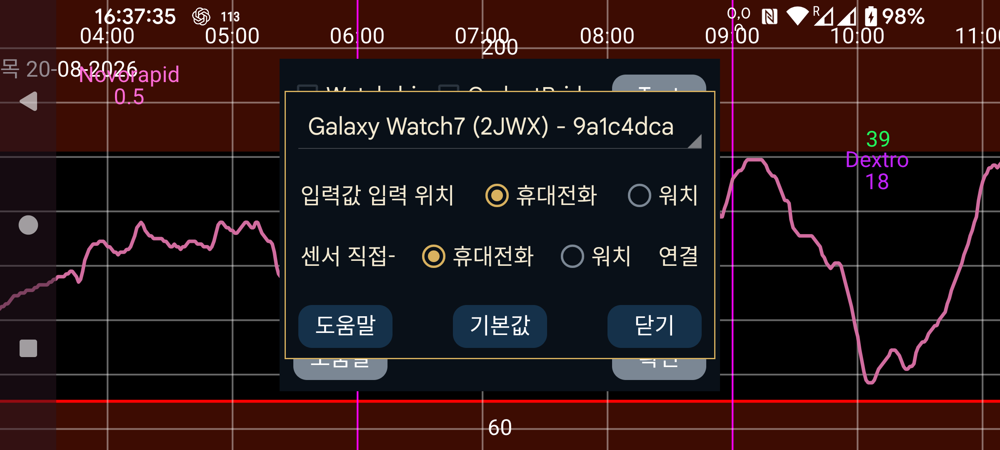

워치에서 숫자(입력값) 입력: 인슐린, 탄수화물 및 활동 입력값을 휴대폰 대신 워치의 두 번째 메뉴→"입력값"에서 입력합니다. 휴대폰으로 NovoPen 을 스캔하려면 이 옵션을 설정하지 마십시오. 휴대폰을 두고 왔다면 워치의 왼쪽 메뉴→센서→전환으로 같은 작업을 할 수 있습니다.
센서-워치 직접 연결: 워치를 센서에 직접 연결할지 결정합니다. 워치와 휴대폰이 동기화되어 있을 때만 변경할 수 있습니다. 휴대폰과 워치의 미러→동기화 및 재초기화를 사용해 두 기기를 동기화하십시오. 워치만 가지고 외출하기 전에 "센서-워치 직접 연결"을 켜는 것을 잊었다면 워치의 왼쪽 메뉴→센서→ 전환 을 눌러 센서를 워치에 직접 연결할 수 있습니다. 휴대폰과 워치가 다시 Bluetooth 범위 안에 들어오면 휴대폰에 센서 연결을 중지하라는 메시지를 보내고 미러 연결 방향을 반대로 바꿉니다.
기본값: 연결 설정을 기본값으로 되돌립니다. 워치의 왼쪽 메뉴→미러 와 휴대폰의 왼쪽 가운데 메뉴→미러에서 변경할 수 있는 설정에 해당합니다. 예를 들면 "능동 전용"과 "스캔" 같은 설정입니다. 샤워 물이나 수면 중 터치 등으로 설정이 실수로 바뀌었다면 이 버튼을 누르십시오. 워치 버전을 다시 설치하거나 데이터를 지워 초기화하는 경우 휴대폰의 미러 연결도 제거해야 합니다.
특수한 Juggluco 버전은 Wear OS 워치에서 직접 실행할 수 있습니다. 센서를 스캔하려면 NFC가 있는 Android 스마트폰이 필요하며 이 데이터는 TCP 연결을 통해 Wear OS 워치로 전송됩니다. 그 뒤 두 가지 방법이 있습니다:
센서는 스마트폰에 계속 연결되고 스마트폰이 Bluetooth로 받은 각 혈당 값을 TCP를 통해 Wear OS 워치로 보냅니다;
센서를 Wear OS 워치에 직접 연결할 수도 있습니다. 이를 위해서는 Bluetooth 연결이 좋은 Wear OS 워치가 필요합니다.
일부 화면은 다음에서 볼 수 있습니다: https://www.juggluco.nl/JugglucoWearOS
작동시키려면 다음을 수행하십시오:
워치와 휴대폰에서 Bluetooth와 Wi-Fi가 모두 작동하는지 확인합니다;
워치에 충분한 저장공간과 RAM이 남아 있는지 확인합니다. 중요한 순간에 저장공간이 부족해지면 Juggluco를 다시 설치해야 할 수도 있습니다;
먼저 휴대폰 버전 Juggluco가 센서와 작동하도록 합니다. "Bluetooth 사용"을 켠 상태에서 센서를 몇 번 스캔해야 합니다;
설치 Wear OS 버전 Juggluco를 Wear OS 워치에 설치하고 시작합니다;
휴대폰에서 왼쪽 메뉴→워치→Wear OS 구성으로 이동합니다. 스피너에 워치가 표시되어야 합니다.
모든 것이 정상이라면 양쪽 Juggluco에 TCP 연결이 구성되고 휴대폰의 모든 데이터가 워치로 전송됩니다. Juggluco를 오래 사용해 전송할 데이터가 많다면 시간이 많이 걸릴 수 있습니다. TCP 연결이 구성되었는지는 미러 대화상자(휴대폰: 왼쪽 가운데 메뉴→미러, 워치: 왼쪽 메뉴→미러)에서 확인할 수 있습니다. 워치 스피너에 표시된 것과 같은 ID의 연결이 있어야 합니다. 워치 쪽에는 휴대폰 IP도 있어야 합니다. 연결이 없거나 워치 쪽에 IP가 없다면 "워치 앱 초기화"를 다시 누르십시오. 그래도 없으면 Bluetooth 연결과 워치 연결을 담당하는 휴대폰 앱을 확인하십시오. 나중에 올바른 IP가 표시되지 않으면 휴대폰에서 외부 연결(Wi-Fi 또는 모바일 데이터)을 껐다 켜십시오.
정상적으로 설정되면 휴대폰 Juggluco에 표시되는 것과 같은 데이터가 워치 Juggluco에도 표시됩니다. 휴대폰이 받는 모든 새 혈당 값은 TCP를 통해 워치로 전송됩니다. 단위, 혈당 알람 수준, 미리 알림 같은 일부 설정도 워치로 전송됩니다. 이후의 변경은 워치 자체에서 해야 합니다.
Bluetooth 연결이 좋은 스마트워치를 사용하며 휴대폰을 가지고 다니지 않고도 워치에서 혈당 값을 받고 싶다면 워치 버전 Juggluco를 센서에 직접 연결할 수 있습니다. 모든 값이 워치로 전송된 뒤 "센서-워치 직접 연결"을 선택할 수 있습니다. 그러면 "Bluetooth 사용" 이 휴대폰에서는 꺼지고 워치에서는 켜집니다. 미러 대화상자에서 확인할 수 있듯 이제 스트림 값은 워치에서 휴대폰으로 전송됩니다. 워치와 휴대폰이 동기화되어 있지 않으면 "센서-워치 직접 연결"을 변경할 수 없습니다.
센서가 워치와 직접 Bluetooth 연결되어 있고 그 값이 스마트폰으로 전송되는 경우, Juggluco로 센서를 스캔하기 전에 스캔 값도 휴대폰에서 워치로 보내고 스트림 값도 동기화해야 합니다(설정은 자동으로 이렇게 구성됩니다). 그렇지 않으면 오래된 값이 워치로 다시 전송되거나 변경된 인증 정보가 워치로 전달되지 않아 잠금 해제 키 오류가 발생할 수 있습니다.
연결 변경도 데이터가 동기화된 상태에서만 해야 합니다. 휴대폰과 워치의 데이터는 완전한 복사본이어야 합니다(입력값 데이터 전체를 제외하도록 설정하는 것은 가능).
처음에 스마트폰에서 워치로 많은 데이터를 전송해야 할 때는 워치를 충전기에 연결할 수 있습니다. 제 워치는 충전기에 연결하면 Wi-Fi를 켭니다.
워치-휴대폰 연결은 Juggluco가 실행되는 휴대폰과 다음이 실행되는 컴퓨터 사이에 구성할 수 있는 미러 연결을 변형한 것입니다: Juggluco server. 위 방법으로 휴대폰과 워치 사이의 연결을 자동 생성하면 다음 기능이 추가됩니다:
연결 상대의 IP가 자동으로 결정됩니다. 일반적으로 미러 연결을 직접 다룰 필요가 없습니다. 대신 왼쪽 메뉴→워치→WearOS 구성에서 설정을 변경할 수 있습니다.
휴대폰과 워치 사이의 Wi-Fi 연결이 작동하지 않으면 Juggluco는 Bluetooth를 통한 TCP 사용으로 전환합니다. 처음 사용하여 워치로 많은 데이터를 보내야 하는 경우를 제외하면 워치의 Wi-Fi를 꺼도 됩니다.
휴대폰과 워치의 Juggluco 사이에 데이터가 교환되지 않으면 다음을 확인하십시오:
워치와 휴대폰에서 Bluetooth가 켜져 있어야 합니다(Wi-Fi는 꺼도 됨);
워치의 동반 앱에서 워치가 휴대폰에 연결되었다고 표시되어야 합니다;
워치의 왼쪽 메뉴→미러와 휴대폰의 왼쪽 가운데 메뉴→미러에 워치 식별자(휴대폰의 왼쪽 메뉴→워치→"WearOS 구성"에 표시되는 것과 같은 식별자)를 가진 자동 생성 연결 항목이 있어야 합니다;
워치의 왼쪽 메뉴→미러에서 재초기화 및/또는 동기화를 누르면 도움이 될 수 있습니다;
때로는 휴대폰에서도 같은 작업을 해야 합니다. 그 뒤 워치에서 다시 해야 할 수도 있습니다;
휴대폰이나 워치에서 Bluetooth를 껐다 켜면 도움이 될 수 있습니다. 그 뒤 워치에서 재초기화와 동기화를 다시 눌러야 합니다;
Wi-Fi 또는 모바일 데이터도 같은 방식으로 껐다 켜야 할 때가 있습니다;
Bluetooth가 다시 작동하게 하려면 휴대폰 및/또는 워치를 재부팅해야 할 때도 있습니다;
어떤 이유로 미러 연결 설정이 잘못된 값으로 변경되었을 수도 있습니다. 휴대폰에서 왼쪽 메뉴→워치→"WearOS 구성"→기본값을 눌러 원래 값으로 재설정할 수 있습니다. 이렇게 하면 센서도 워치가 아니라 휴대폰에 연결됩니다. 워치에만 있는 데이터는 덮어써집니다;
모든 방법이 실패하면 워치 버전을 다시 설치하고 처음부터 시작할 수 있습니다. 이 경우 왼쪽 가운데 메뉴→미러에서 기존 워치 연결을 제거해야 합니다.
휴대폰에는 없지만 워치에는 데이터가 남아 있다면 복구가 더 어렵습니다. 어떤 방식으로든 먼저 휴대폰이 데이터를 받을 수 있는 정상 미러 연결을 만들어야 합니다.
Wear OS용 Juggluco에는 시간과 함께 현재 혈당 수준 및 최대 네 개의 컴플리케이션을 표시하는 워치 페이스가 포함됩니다. 사용하려면 예를 들어 워치 동반 앱의 "다운로드됨"에서 이 워치 페이스를 선택해야 합니다. 보통 화면이 켜지면 마지막 혈당 값이 보입니다. 화면이 주변 표시(always-on) 모드일 때는 분 표시가 갱신되거나 버튼을 누르거나 팔을 들어 올릴 때만 혈당 값이 갱신됩니다. 따라서 표시값이 최대 1분 늦을 수 있습니다. 일부 최신 워치(예: Samsung Galaxy Watch 7 및 Watch Ultra)는 배터리 절약을 위해 프로그래밍된 워치 페이스를 허용하지 않으므로 이 워치 페이스를 사용할 수 없습니다.
Juggluco 8.2.0 이상에는 WearOS 5에서도 사용할 수 있는 혈당 값, 혈당 화살표, 화살표+값 컴플리케이션이 있습니다. 작은 이미지 또는 큰 이미지 컴플리케이션 슬롯을 받는 모든 워치 페이스에서 사용할 수 있습니다. 예: Time and Track 또는 Watchface for Juggluco. 다음으로 직접 워치 페이스를 만들 수도 있습니다: Watch Face Studio.
세 번째 방법은 워치의 Juggluco 설정에서 플로팅 혈당 을 켜는 것입니다. Juggluco에 필요한 권한이 있으면 다른 앱 위에 혈당 값이 표시됩니다. 따라서 임의의 워치 페이스나 활동 모니터링 앱을 사용하는 동안에도 현재 혈당 값을 볼 수 있습니다. 자세한 내용은 휴대폰 버전 Juggluco에서 왼쪽 메뉴→설정→ 플로팅 혈당 →도움말을 참조하십시오.
동반 앱에서 왼쪽 가운데 메뉴→미러에 설명된 대로 인터넷을 통해 다시 다른 기기로 보낼 수 있습니다. 또한 다음에 설명된 것처럼 워치를 인터넷의 서버에 직접 연결하고 그 서버에서 follower 휴대폰으로 연결할 수도 있습니다: https://www.juggluco.nl/Juggluco/cmdline/watch